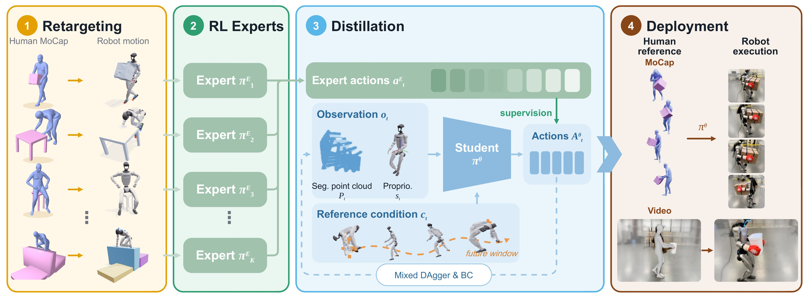
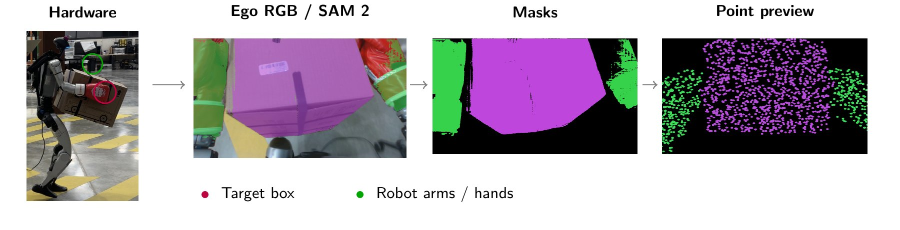
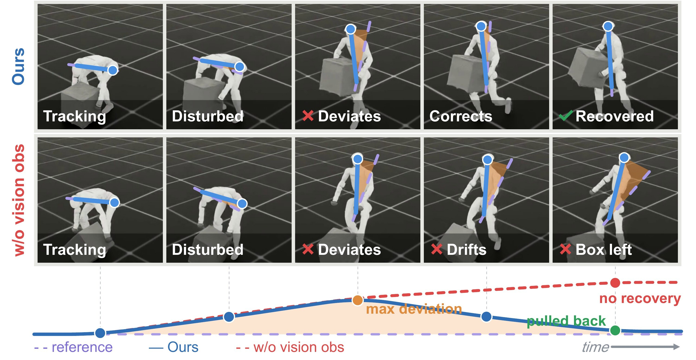
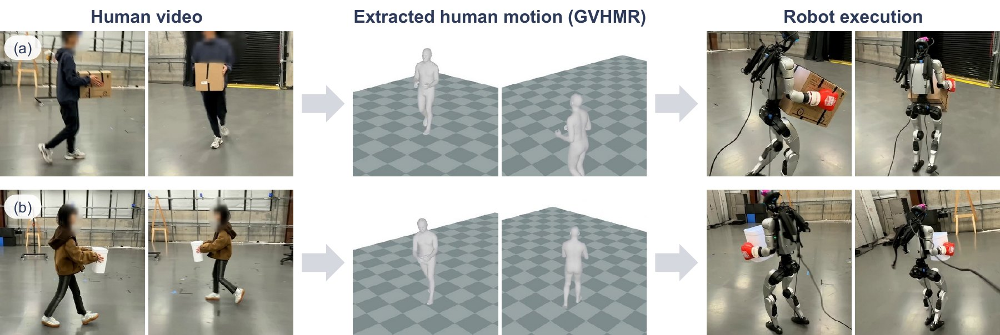
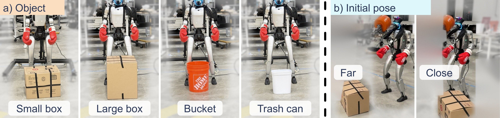

OBJECT INTERACTION
Humanoid whole-body interaction
One policy.
Many ways to move.
VIRGO: A Visuomotor Reference-Conditioned Generalist for Whole-Body Humanoid Interaction
HUMAN TO HUMANOIDVIRGO PROJECT

One policy across whole-body interactions
01THE IDEA
From human motion to humanoid interaction.
Human MoCap and video guide one policy for object interaction, sitting, and climbing.
Object interactionSittingClimbingOne frozen policy
02THE VIDEO
VIRGO in action
See the interactions
in motion.
FULL VIDEO · 3 MINHuman references · Robot execution
Real-world sequences
OBJECT INTERACTION
Push a chair
SUPPORT TRANSITION
Sit on a chair
SUPPORT TRANSITION
Climb a platform
03THE APPROACH
Expert to generalist
Experts teach.
One student learns.
Retarget
Turn human motion into robot references.
Track
Train RL experts in simulation.
Distill
Teach one visuomotor diffusion policy.
Deploy
Act with motion, vision, and robot state.
PIPELINE OVERVIEW

REFERENCE-CONDITIONED STUDENT

ONBOARD PERCEPTION

04THE RESULTS
Held-out references in simulation
One policy across
three task families.
Mean trajectory progress before failure on held-out tasks.
OBJECT INTERACTION0.828
CLIMBING0.631
SITTING0.557
VIRGO leads the evaluated deployable methods on progress; object-pose error is higher than some baselines.
UNSEEN CHAIR REFERENCE

VISUAL RECOVERY

05THE SHOWCASE
Unitree G1
A wider range of
whole-body behavior.

REAL ROBOT / ONE FROZEN POLICY
Interaction beyond locomotion.
Carry, push, lift, sit, and climb.

SIMULATION / TASK COVERAGE
Many tasks, one learning route.
Objects, stools, steps, and platforms.
HUMAN VIDEO TO ROBOT

HARDWARE GENERALIZATION

06THE RESEARCH
Project summary
About VIRGO
VIRGO retargets human motion, trains RL experts, and distills them into one reference-conditioned visuomotor policy. A frozen student uses egocentric vision and robot state to follow new references on a Unitree G1.
Scope. The policy follows a supplied motion reference.